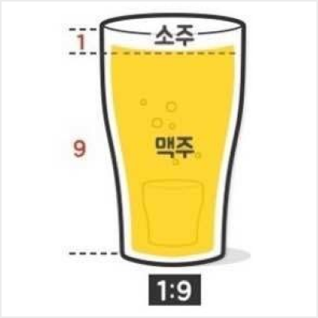

참이슬 & 테라
알고 마시면 더 맛있는 하이트 진로의 참이슬과 테라의 비율 추천


꿀주
1:9
맥주가 소주에 닿자마자 먹는 것을
추천해요! 꿀주는 시간이 생명인 소
맥이에요. 시간에 따라 맛이 달라지
는데 하이트진로는 맥주를 먼저 9의
비율로 따라주고 소주를 1의 비율로
따른 후에 0.05초만에 최대한 빠르게
마시는 것을 추천해요. 그러고 나면
소맥에서 꿀향이 날거예요.
깻잎주
2:8
맥주와 소주를 2:8의 비율로 탄 소맥
이에요. 2:8 깻잎 가르마에서 탄생한
깻잎주는 깻잎과 잘 어울리는 소맥이
에요. 고기를 깻잎 싸서 안주로 먹어주
면 환상의 조합이 돼요. 깻잎주를 먹을
때는 삼겹살과 깻잎, 쌈장을 잊지 마세
요. 당신의 술자리를 최고의 파티로 만
들어 줄거예요.
폭탄주
3:7
하이트진로에서 밀고 있는 3:1주 다
음으로 최고의 비율이에요. 가장 유
명한 비율이긴 하지만, 참이슬과 테
라의 3:7 비율을 따라올 소주와 맥주
는 없답니다. 폭탄주를 마실 때는 섞
어주는 파워가 굉장히 중요하다는 것
을 잊지 말아주세요! 숟가락으로 최대
한의 힘을 실어 폭탄주를 말아주세요.
일대일주
5:5
호불호가 꽤 갈리는 소맥이라 알고 있
으신 분들도 많겠지만, 참이슬과 테라
라면 절대 불호가 될 수 없답니다. 맥주
를 먼저 5의 비율로 따라준 후에 나머지
잔에 소주를 가득 채워줍니다. 폭탄주와
마찬가지로 섞어주는 것이 중요해요. 얼
마나 많이 섞어주느냐가 일대일주의 맛
을 좌우한다는 것을 잊지 말아주세요.